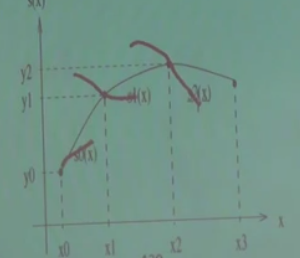
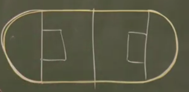
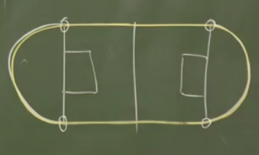
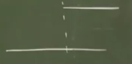
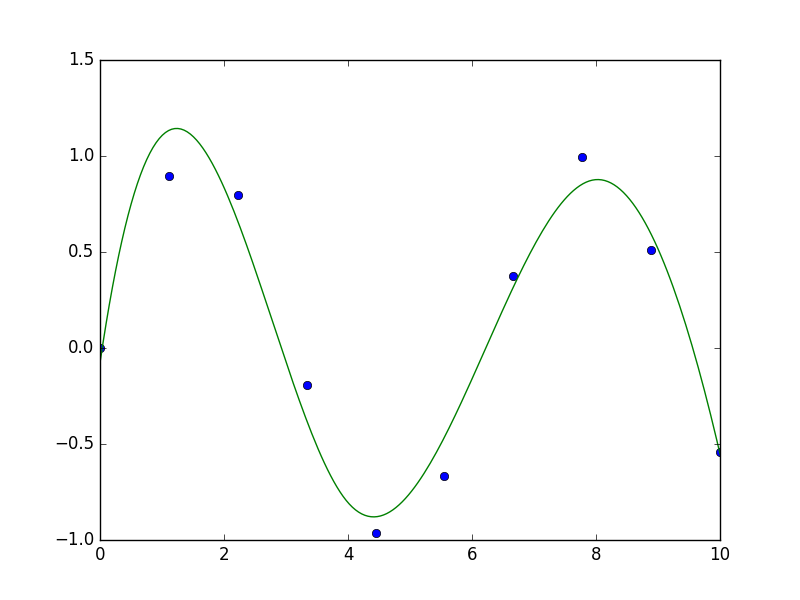
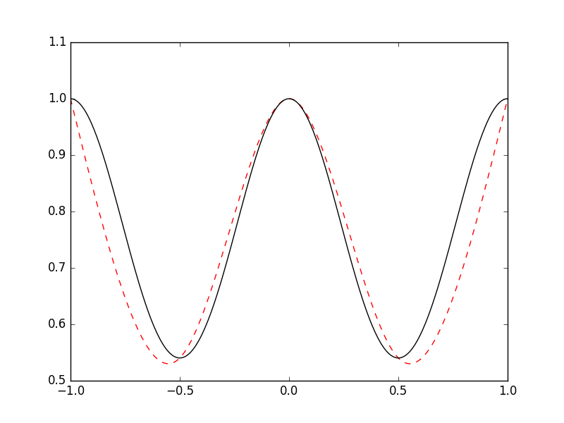

Eğri Uydurma, Aradeğerleme (Interpolation) - 3
Spline Eğrileri
Diyelim ki elimizde 4 $x_i,y_i$ noktası var, ve bu noktalardan geçen, hepsinden kesinlikle geçen, yaklaşıksal bir eğri oluşturmak istiyoruz. Spline yöntemi her iki nokta arasını farklı bir küpsel (üçüncü derece) polinom ile temsil etmektir. Tekrar dikkat: tüm noktaları temsile edebilecek farklı polinomları toplamıyoruz, her aralıkta başka bir polinom fonksiyonu parçasını devreye sokuyoruz. Parçalar niye küpsel olarak seçildi? Çünkü küpsel bir eğri yeterince kavis sağlayabilir ve aynı zamanda çok fazla inişli çıkışlı, sivri değildir, yeterince pürüzsüz bir eğrinin ortaya çıkmasını sağlar.

Her $i=0,..,n+1$ için
$$ p(x) = p_i(x) = a_i + b_i(x-x_i) + c_i(x-x_i)^2 + d_i(x-x_i)^3 \qquad (1) $$
kullanalım. Noktalar $x_i$ olarak gösteriliyor, ve her noktada aktif olan bir $p_i$ spline olacak, o noktadan bir sonrakine kadar eğriyi bu $p_i$ tanımlayacak. Noktaların sayısını $n$ yerine $n+1$ olarak aldık böylece $n$ eğri parçası ile çalışmamız mümkün olacak. Her spline bir küpsel polinom ise niye bu küpsel polinomu en basit şekliyle
$$ p(x) = a_i + b_ix + c_ix^2 + d_ix^3 $$
olarak tanımlamadık? Çünkü iki üstteki form ile çalışmak daha rahat. Mesela, eğer $x$ için $x_i$ değrini verirsek, ki bu $x_1$ ya da $x_2$ olabilirdi, o zaman parantez içinde $x_i - x_i$ sayesinde tüm terimler sıfır oluyor, geriye sadece $a_i$ kalıyor.
Parçaların uçlarının birbirini tutması, ve tüm şeklin sürekli, akışkan bir şekilde gözükmesi için ise birkaç koşulu bizim tanımlamamız, ve zorlamamız gerekli. Önce en basit olanı: bir önceki parça ile bir sonraki parça orta nokta üzerinde aynı değere sahip olmalı. $i=1,..,n+1$ için
$$ p_i (x_{i+1}) = p_{i+1}(x_{i+1}) $$
Bir diğer basit gereklilik, her $x_i$'ye tekabül eden spline fonksiyonun elimizdeki $y_i$ değerini vermesi,
$$ p_i(x_i) = y_i $$
"Tüm noktalardan kesinlikle geçmeli" demiştik. Son parça bir istisna oluşturuyor, bu son parçanın fonksiyonu hem son noktayı, hem de ondan bir önceki nokta için kullanılmalı, bir önceden en sona kadar aynı fonksiyon üzerindeyiz.
$$ p_{n}(x_n) = y_{n+1} $$
Sistemi daha detaylı olarak görmek gerekirse, tüm denklemleri yazalım,
$$ p_1(x) = a_1 + b_1(x-x_1) + c_1(x-x_1)^2 + d_1(x-x_1)^3$$
$$ p_2(x) = a_2 + b_2(x-x_2) + c_2(x-x_2)^2 + d_1(x-x_2)^3$$
$$ \vdots $$
$$ p_n(x) = a_n + b_n(x-x_n) + c_n(x-x_n)^2 + d_3(x-x_n)^3$$
Üç noktalı şöyle bir grafik düşünelim,

Üstte bahsettiğimiz gibi, $p_1(x_1) = a_1 = y_1$ olacak, ve tüm indisler için bu geçerli. Ayrıca $x_2$ noktasında bir önceki parça ve sonraki parça aynı değere sahip olmalı demiştik, yani mesela $p_1$'in sonunda (üstteki ilk parça) $x_2$ noktası vardır, ve aynı noktada $p_2$ başlayacaktır, o noktada $$ p_1(x_2) = a_1 + b_1h_1 + c_1h_1^2 + d_1h_1^3 $$
ve bu denklem $p_2(x_2) = a_2 = y_2$'ye eşit. Bir de, daha önce gördük, $a_1 = y_1$ ise, o zaman
$$ y_2 = p_1(x_2) = y_1 + b_1h_1 + c_1h_1^2 + d_1h_1^3 $$
haline gelir. Hepsini birarada yazıyoruz ($y$'yi sağ tarafa aldık)
$$ y_1 + b_1h_1 + c_1h_1^2 + d_1h_1^3 = y_2 \qquad (2) $$
$$ y_2 + b_2h_2 + c_2h_2^2 + d_2h_2^3 = y_3 $$
$$ \vdots $$
$$ y_n + b_nh_n + c_nh_n^2 + d_nh_n^3 = y_n $$
ki $h_1 \equiv x_2 - x_1$, $h_2 \equiv x_3 - x_2$ olarak tanımladık, $\equiv$ işareti "tanımlamak (defined as)" anlamına geliyor, $h$ harfi bir tür kısaltma olarak kullanıldı. Fakat kesintisizlik için parçaların uçlarının bitişmesi yeterli değil. Mesela alttaki figürün de uçları birleşiktir,

Demek ki ek bazı şartlar lazım. Bu ek şart "süreklilik" olabilir. Mesela alttaki örnek sürekli değildir.

Ya da daha iyisi, fonksiyonun her noktada "türevi alınabilir" olma şartı. Mesela altta koyu yuvarlaklı gösterilen noktada fonksiyonun türevi alınamaz.

O zaman şartı koyalım -- Fonksiyonun her noktasında, ikinci türev sürekli alınabilmeli. Bu çok ağır / net bir şart aslında, ve hakikaten çok pürüzsüz (smooth) fonksiyonların oluşmasına sebep oluyor. Şimdi bunun ne anlamına biraz daha yakından bakalım. Biliyoruz ki futbol sahalarının etrafında koşu alanı vardır. Bu alan şöyledir.

Bu şekil iki ayrı figürün birleşimidir aslında, düz çizgiler ve iki tane yarı çember. Üstteki düz çizgili kısım sonsuz kere türevi alınabilir bir fonksiyondur. Değil mi? Düz çizgi sabit bir sayıdır, 1. türev sıfır, ikinci türev yine sıfır, böyle gider. Peki yarı çember olan kısımlar? Aynı şekilde. Peki her noktada durum böyle midir? Kritik noktalar ufak yuvarlaklarla gösterilen yerler (altta)

Bu noktalarda kaç kere "sürekli türevler" alınabilir? Cevap, sadece bir kere. Çünkü iki kere türev alınınca ne olacağına bakalım, düz kısımda ikinci, üçüncü, vs. türev sıfır. Peki yarı çember? Onun ikinci türevi sıfır olmayan sabit bir sayı. O zaman fonksiyonun tamamının (düz çizgi ve yarı çemberin beraber) 2. türevini grafiklesek, şöyle bir şekil ortaya çıkardı,

ve bu grafikte görüyoruz ki bir zıplama var. Bu zıplama yüzünden süreklilik (2. türevde) bozulmuş oldu. O zaman spline düzgün, pürüzsüz olsun istiyorsak, her noktada, yani bağlantı noktalarında, sağdaki ve soldaki parçanın birinci ve ikinci türevinin aynı olması şartını koyabiliriz, o zaman bu noktalarda fonksiyonun tamamı iki kere sürekli türevi alınabilir hale gelir. Parçaların kendisi üzerinde bu şartı tanımlamaya gerek yok, çünkü orada polinom kullanacağımızı belirttik zaten, polinomlar sonsuz kere sürekli türevi alınabilen objelerdir.
Denklem sistemimize iki tane daha şart gerekiyor. Bu şartlar fonksiyonun ilk noktada ve son noktada ikinci türevinin sıfır olması şartı olabilir. Her hangi yöndeki bir çizgi $y = ax + b$'nin iki kere türevi alınınca sıfır gelir, yani bu şart fonksiyonumuzun son noktalarda, fonksiyonun "aşağı yukarı aynı yönde" olacak şekilde düz olarak devam etmesi anlamına geliyor. Yaklaşıksal bağlamda fena bir şart değil.
O zaman ana formüllerimize dönelim, ve mesela $p_1(x),p_2(x)$'in türevini alalım,
$$ p_1'(x) = b_1 + 2c_1h_1 + 3d_1h_1^2 $$
$$ p_2'(x) = b_2 + 2c_2h_2 + 3d_2h_2^2 $$
$$ \vdots $$
Türevleri eşitleyelim $p_1'(x_2) = p_2'(x_2)$.
$$ p_1'(x_2) = b_1 + 2c_1h_1 + 3d_1h_1^2 $$
$$ p_2'(x_2) = b_2 $$
Üstteki niye sadece $b_2$ oldu? Çünkü $x_i-x_i$ numarası onun için de geçerli, geriye sadece $b_2$ kaldı. Hepsi bir arada
$$ b_1 + 2c_1h_1 + 3d_1h_1^2 = b_2 \qquad (3)$$
$$ b_2 + 2c_2h_2 + 3d_2h_2^2 = b_3 $$
$$ \vdots $$
$$ b_{n-1} + 2c_{n-1}h_{n-1} + 3d_{n-1}h_{n-1}^2 = b_n $$
İkinci türevler için benzer bir durum var, bu sefer sol taraftan $b$'ler yokoluyor,
$$ 2c_1 + 6d_1h_1 = 2c_2 \qquad (4) $$
$$ 2c_2 + 6d_2h_2 = 2c_3 $$
$$ \vdots $$
$$ 2c_{n-1} + 6d_{n-1}h_{n-1} = 2c_n $$
İlk ve son ikinci türevi sıfıra eşitlemeyi unutmayalım. Son türev
$$ 2c_n + 6d_nh_n = 2c_{n+1} = 0 $$
İlk türev
$$ p_1"(x_1) = c_1 + 6d_1(x_1-x_1) = c_1 = 0$$
$$ 6d_1(x_1-x_1) $$ sıfır olur
Denklem (4)'den başlayan bölümü tekrar düzenlersek,
$$ d_1 = \frac{ c_2 - c_1}{3h_1} \qquad (5) $$
$$ d_2 = \frac{ c_3 - c_2}{3h_2} $$
$$ \vdots $$
$$ d_n = \frac{ c_{n+1} - c_n}{3h_n} $$
Üstteki denklemleri (2) ve (3)'e geri koyarsak,
$$ b_1 + \frac{ c_2 + 2c_1}{3}h_1 = s_1 \qquad (7) $$
$$ b_2 + \frac{ c_3 + 2c_2}{3}h_1 = s_2 $$
$$ \vdots $$
$$ b_n + \frac{ c_{n+1} + 2c_n}{3}h_n = s_n $$
ki $s_1 \equiv \frac{y_2 - y_1}{h_1}, s_2 \equiv \frac{y_3 - y_2}{h_2}$.
(3) ifadesini alıp tekrar düzenlersek,
$$ 2c_1h_1 + 3d_1h_1^2 = b_2 - b_1$$
$3d_1h_1$ için başka bir ifade kullanabiliriz, eğer (5)'i tekrar düzenlersek,
$$ 3h_1d_1 = c_2 - c_1$$
ve iki üstteki formüle koyarsak
$$ 2c_1h_1 + (c_2 - c_1)h_1 = b_2 - b_1$$
$$ 2c_1h_1 + c_2h_1 - c_1h_1 = b_2 - b_1$$
$$ c_1h_1 + c_2h_1 = b_2 - b_1$$
$$ (c_1 + c_2) h_1 = b_2 - b_1$$
Bu ifade tüm $i$ noktaları için geçerli, hepsi bir arada
$$ (c_1 + c_2) h_1 = b_2 - b_1 \qquad (6)$$
$$ (c_2 + c_3) h_2 = b_3 - b_2$$
$$ \vdots $$
$$ (c_{n-1} + c_n) h_{n-1} = b_n - b_{n-1}$$
(7)'deki ardı ardına gelen denklemleri birbirinden çıkartıp sonucu 3 ile çarparsak,
$$ c_1h_1 + 2c_2(h_1 + h_2) + c_3h_2 = 3(s_2 - s_1) $$
$$ c_2h_2 + 2c_3(h_2 + h_3) + c_4h_3 = 3(s_3 - s_2) $$
$$ \vdots $$
$$ c_{n-1}h_{n-1} + 2c_n(h_{n-1} + h_{n}) + c_{n+1}h_n = 3(s_n - s_{n-1}) $$
Bu formüller birarada düşünülürse, bilinmeyenleri $c_2,c_3,..,c_n$ olan normal (ordinary) $n-1$ tane lineer denklemdirler, ve bir matris çarpımı olarak düşünülebilirler.
$c_1h_1$ matris formunda yok çünkü $c_1=0$.
$$ \left[\begin{array}{cccccc} 2(h_1+h_2) & h_2 & 0 & 0 & ... & 0 \\ h_2 & 2(h_2+h_3) & h_3 & 0 & .. & 0 \\ 0 & h_3 & 2(h_3+h_4) & h_4 & .. & 0 \\ 0 & 0 & h_4 & 2(h_4+h_5) & ... & 0 \\ \vdots & \vdots & \vdots & \vdots & \ddots & \vdots \\ 0 & 0 & .. & 0 & h_{n-1} & 2(h_{n-1}+h_n) \end{array}\right] \left[\begin{array}{r} c_2 \\ c_3 \\ \vdots \\ c_n \end{array}\right] $$
Bu denklem sağ tarafta suna eşit
$$ \left[\begin{array}{r} 3(s_2 - s_1) \\ 3(s_3 - s_2) \\ 3(s_4 - s_3) \\ \vdots \\ 3(s_n - s_{n-1}) \end{array}\right] $$
Bir üçgen köşegen (tridiagonal) matris iki tane ikili köşegen (bidiagonal) matrisin çarpımına eşittir. LU çarpanlarına ayırma işlemi de, bkz [5], bize bu matrisleri sağlayacaktır.
$$ Ax = b $$
şu hale gelir
$$ LUx = b $$
Şimdi eğer $Ux = y$ kabul edersek, yani yeni bir değişkeni dahil edersek, $L$'i bulduktan sonra
$$ Ly = b $$
kabul edebiliriz, ve bu formülü de $y$ için çözmek çok kolaydır. Sonra çözülen $y$'yi alıp geriye sokma (backsubstitution) ile $x$'i buluruz, yani
$$ Ux = y $$
denklemini çözeriz.
import scipy.linalg as lin
a = np.array( [[3.,-3.,0,0],
[-3.,8.,-2.,0],
[0,1.,2.,4.],
[0,0,-2.,6.]])
p,l,u = lin.lu(a)
Ly = np.array([[7.,8.,2.,-3.]])
y = lin.solve(l,Ly.T)
x = lin.solve(u,y)
print x
[[ 5.44047619]
[ 3.10714286]
[ 0.26785714]
[-0.41071429]]
Spline yöntemine dönersek, elimizdeki veri ve kod şöyle olsun
import scipy.linalg as lin
xx = np.array([4.,9.,12.,16.,22.])
yy = np.array([157.,41.,145.,92.,7.])
h = np.diff(xx)
dy = np.diff(yy)
s = dy / h
ds = np.diff(s)
s3 = 3 * ds
a = np.array([[ 2*(h[0]+h[1]), h[1], 0],
[ h[1], 2*(h[1]+h[2]), h[2]],
[ 0, h[2], 2*(h[2]+h[3])]])
p,l,u = lin.lu(a)
y = lin.solve(l,s3.T)
c = lin.solve(u,y)
print c
[ 13.45756677 -13.90702275 2.64390455]
$c$'ler bulunduktan sonra $h$'lerle beraber kullanılarak $d$'ler bulunur, vs, ve tüm spline parçalarının katsayıları ortaya çıkartılır.
Kodlar
Bazı kodlar altta bulunabilir. İlk önce SciPy ile B-spline, ilmikleri biz dışarıdan tanımladık,
from scipy.interpolate import splev, splrep
x = np.linspace(0, 10, 10)
y = np.sin(x)
tck = splrep(x, y, t=[4,8]) # ilmikler t icinde
x2 = np.linspace(0, 10, 200)
y2 = splev(x2, tck)
plt.plot(x, y, 'o', x2, y2)
plt.savefig('compscieng_1_21_05.png')

Alttaki kodlar tüm eğrinin verideki her noktayı ilmik olarak görmesi gerektiğine göre yazılmıştır, yani her veri noktası aynı zamanda bir ilmiktir.
import numpy as np
def Splines(data):
np1=len(data)
n=np1-1
X,Y = zip(*data)
X = [float(x) for x in X]
Y = [float(y) for y in Y]
a = Y[:]
b = [0.0]*(n)
d = [0.0]*(n)
h = [X[i+1]-X[i] for i in xrange(n)]
alpha = [0.0]*n
for i in xrange(1,n):
alpha[i] = 3/h[i]*(a[i+1]-a[i]) - 3/h[i-1]*(a[i]-a[i-1])
c = [0.0]*np1
L = [0.0]*np1
u = [0.0]*np1
z = [0.0]*np1
L[0] = 1.0; u[0] = z[0] = 0.0
for i in xrange(1,n):
L[i] = 2*(X[i+1]-X[i-1]) - h[i-1]*u[i-1]
u[i] = h[i]/L[i]
z[i] = (alpha[i]-h[i-1]*z[i-1])/L[i]
L[n] = 1.0; z[n] = c[n] = 0.0
for j in xrange(n-1, -1, -1):
c[j] = z[j] - u[j]*c[j+1]
b[j] = (a[j+1]-a[j])/h[j] - (h[j]*(c[j+1]+2*c[j]))/3
d[j] = (c[j+1]-c[j])/(3*h[j])
splines = []
for i in xrange(n):
splines.append((a[i],b[i],c[i],d[i],X[i]))
return splines,X[n]
def splinesToPlot(splines,xn,res):
n=len(splines)
perSpline = int(res/n)
if perSpline < 3: perSpline = 3
X=[]
Y=[]
for i in xrange(n-1):
S = splines[i]
x0 = S[4]
x1 = splines[i+1][4]
x = np.linspace(x0,x1,perSpline)
for xi in x:
X.append(xi)
h=(xi-S[4])
Y.append(S[0]+S[1]*h + S[2]*h**2 + S[3]*h**3)
S=splines[n-1]
x=np.linspace(S[4],xn,perSpline)
for xi in x:
X.append(xi)
h=(xi-S[4])
Y.append(S[0]+S[1]*h + S[2]*h**2 + S[3]*h**3)
return X,Y
import Spline
x = lambda n: np.linspace(-1,1,n)
f = lambda x: np.cos(np.sin(np.pi*x))
n = 5
E=200
data = zip(x(n),f(x(n)))
splines,xn = Spline.Splines(data)
X,Y = Spline.splinesToPlot(splines,xn,E)
plt.plot(X,Y,'r--')
plt.plot(x(300),f(x(300)),'k')
plt.savefig('compscieng_1_21_04.png')

Bir diğer örnek
import numpy as np
from LUdecomp3 import *
def curvatures(xData,yData):
n = len(xData) - 1
c = np.zeros(n)
d = np.ones(n+1)
e = np.zeros(n)
k = np.zeros(n+1)
c[0:n-1] = xData[0:n-1] - xData[1:n]
d[1:n] = 2.0*(xData[0:n-1] - xData[2:n+1])
e[1:n] = xData[1:n] - xData[2:n+1]
k[1:n] =6.0*(yData[0:n-1] - yData[1:n]) \
/ (xData[0:n-1] - xData[1:n]) \
-6.0*(yData[1:n] - yData[2:n+1]) \
/ (xData[1:n] - xData[2:n+1])
LUdecomp3(c,d,e)
LUsolve3(c,d,e,k)
return k
def evalSpline(xData,yData,k,x):
def findSegment(xData,x):
iLeft = 0
iRight = len(xData)- 1
while 1:
if (iRight-iLeft) <= 1: return iLeft
i =(iLeft + iRight)/2
if x < xData[i]: iRight = i
else: iLeft = i
i = findSegment(xData,x)
h = xData[i] - xData[i+1]
y = ((x - xData[i+1])**3/h - (x - xData[i+1])*h)*k[i]/6.0 \
- ((x - xData[i])**3/h - (x - xData[i])*h)*k[i+1]/6.0 \
+ (yData[i]*(x - xData[i+1]) - yData[i+1]*(x - xData[i]))/h
return y
if __name__ == "__main__":
xData = np.array([1,2,3,4,5],float)
yData = np.array([0,1,0,1,0],float)
k = curvatures(xData,yData)
x = 1.5
print("y =",evalSpline(xData,yData,k,x))
import pandas as pd, cubicSpline
df = pd.read_csv('in.csv')
res = cubicSpline.curvatures(np.array(df.x), np.array(df.y))
print res
[ 0. -2.27960615 0.5983445 -2.14369027 -0.5421918 -0.9485407
4.83823742 1.40244849 -0.82589911 -1.3439826 2.52298704 0. ]
Kaynaklar
[1] Vrbik, MATH 2P20 NUMERICAL ANALYSIS I Lecture Notes, http://spartan.ac.brocku.ca/~jvrbik/MATH2P20/notes.pdf
[2] Ertel, Advanced Mathematics for Engineers Lecture No. 14, http://www.youtube.com/watch?v=3rHBCglD1LQ
[3] Ertel, Advanced Mathematics for Engineers Lecture No. 15, http://www.youtube.com/watch?v=nA0YpqraP9A
[4] Recktenwald, Numerical Methods with MATLAB Implementations and Applications
[5] Bayramlı, Lineer Cebir, Ders 4
Yukarı